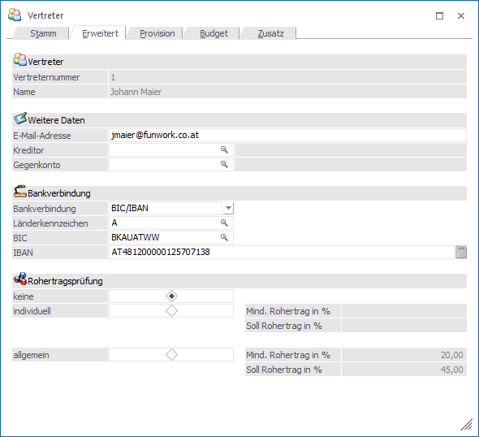
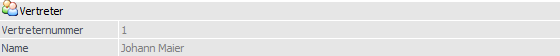
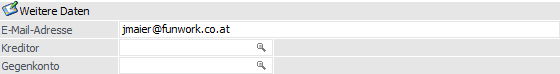
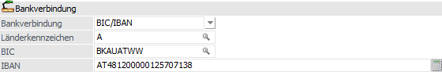
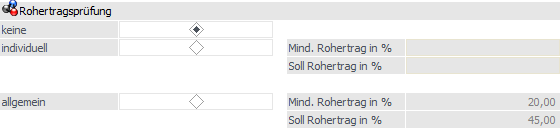

In dem Register "Erweitert" können Bankdaten für einen Vertreter, sowie Einstellung für die Rohertragsprüfung hinterlegt werden.

Folgende Eingabefelder, Einstellungen und Informationen stehen zur Verfügung:
Vertreter

Ø Vertreternummer
An dieser Stelle wird die Nummer des aktuellen Vertreters angezeigt.
Ø Name
Hier wird der Name des aktuellen Vertreters dargestellt.
Weitere Daten

Ø E-Mail
An dieser Stelle erfolgt die Hinterlegung der E-Mail-Adresse des Vertreters.
Ø Kreditor / Gegenkonto
Um für den Vertreter eine Zahlungsbuchung erstelle zu können, die in weiterer Folge an die Finanzbuchhaltung übergeben werden kann, muss ein Kreditor (z.B. Kreditorenkonto des Vertreters) und ein Gegenkonto (z.B. das Sachkonto "schwebende Geldbewegungen") angegeben werden.
Bankverbindung

Bankverbindung
An dieser Stelle kann definiert werden, ob die Bankverbindung mit "BLZ/Kto.Nr." oder "BIC/IBAN" angegeben werden soll.
Länderkennzeichen
Hier wird das Länderkennzeichen der Bank hinterlegt.
Ø Bankleitzahl / Konto oder BIC / IBAN
Abhängig von der Einstellung "Bankverbindung" können in diese Felder die "Bankleitzahl und Kontonummer" oder "BIC und IBAN" angegeben werden.
Rohertragsprüfung

Ø Art der Rohertragsprüfung
Damit die Rohertragsprüfung (abhängig von der Einstellung in der Artikelgruppe) im Belegerfassen durchgeführt wird, muss an dieser Stelle eine Einstellung getroffen werden:
ü Keine
Es wird keine
Rohertragsprüfung durchgeführt.
ü Individuell
Unabhängig von den,
in den FAKT-Parametern hinterlegten Rohertrags-Prozentsätzen, können hier
vertreterspezifische Prozentsätze (für Mind.- und Soll-Rohertrag) angegeben
werden
ü Allgemeine
Für die
Rohertragsprüfung werden allgemeinen Prozentsätze aus den FAKT-Parametern
herangezogen.